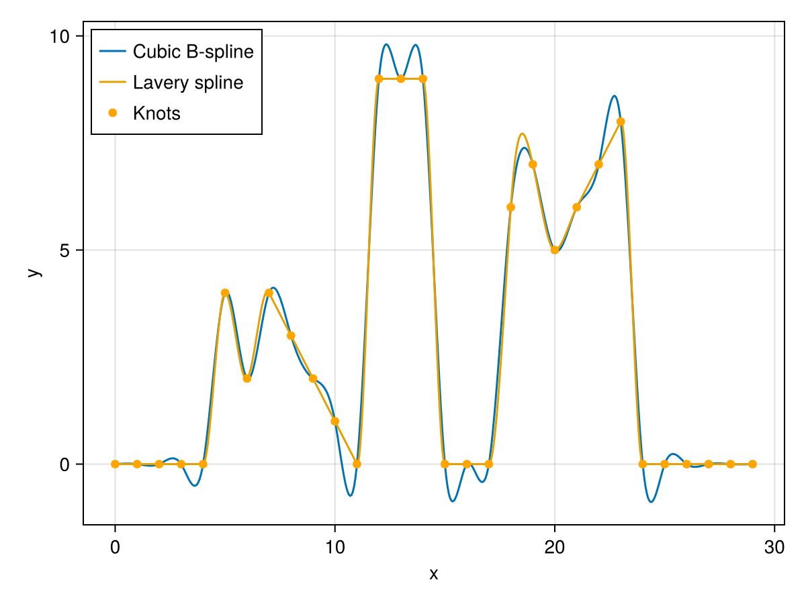
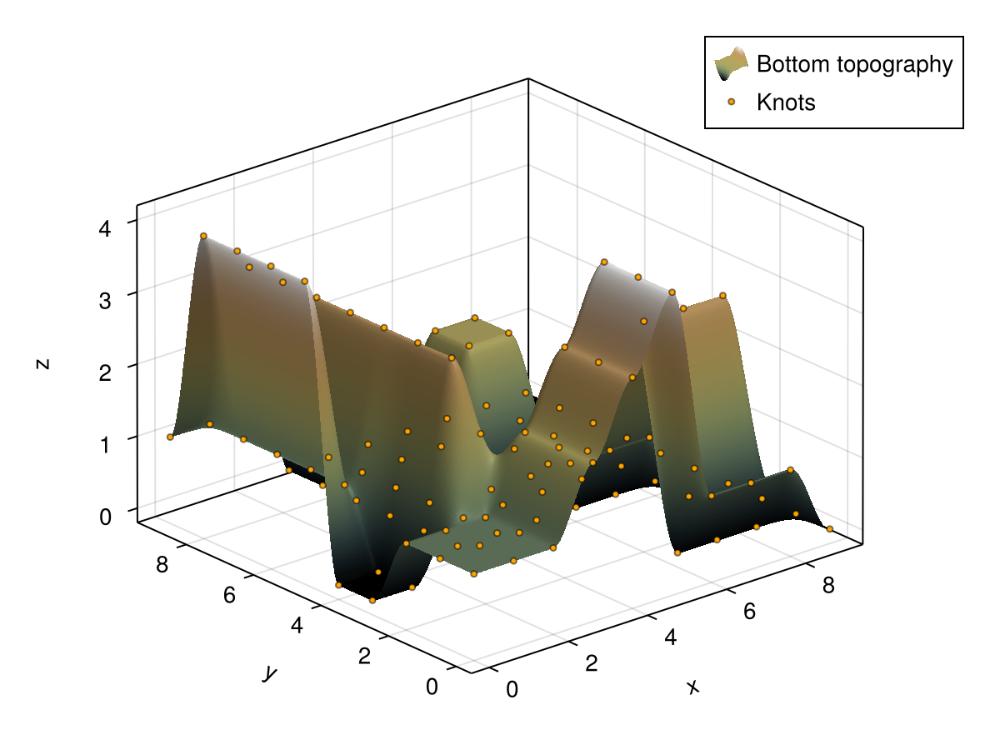

Shape-preserving splines
For data with sharp transitions, e.g., steep riverbanks or dikes, standard interpolation techniques can introduce spurious oscillations and extrema that are not present in the underlying data.
To avoid these phenomena, TrixiBottomTopography.jl provides shape-preserving cubic splines, so-called Lavery splines, which are designed to retain sharp features without introducing additional extrema. Their coefficients are determined by linear optimization problems solved with HiGHS.jl through MathOptInterface.jl.
MathOptInterface.jl and HiGHS.jl are optional dependencies and must be installed separately. To activate the shape-preserving spline functionality, load both packages alongside TrixiBottomTopography.jl. CairoMakie.jl is only required for visualization.
One dimensional case
The constructor LaverySpline1D accepts vectors x and y, or a path to a text file in the format described in Converting DGM data files.
We consider the example file lavery_spline_1d.jl from the examples folder.
# Include packages
using TrixiBottomTopography
using MathOptInterface
using HiGHS
using CairoMakie
# Data
x_data = Vector(0.0:29.0)
y_data = [0.0, 0.0, 0.0, 0.0, 0.0, 4.0, 2.0, 4.0, 3.0, 2.0,
1.0, 0.0, 9.0, 9.0, 9.0, 0.0, 0.0, 0.0, 6.0, 7.0,
5.0, 6.0, 7.0, 8.0, 0.0, 0.0, 0.0, 0.0, 0.0, 0.0]
# Lavery spline
lavery_spline = LaverySpline1D(x_data, y_data)Besides x and y, LaverySpline1D accepts two optional keyword arguments:
lambda: An additional regularization parameter for the slope coefficients (default:0.0).integral_steps: The number of discrete points used to numerically evaluate the objective integral of the underlying optimization problem (default:10).
As with the B-spline structures, the resulting lavery_spline is used to define the interpolation function spline_func via spline_interpolation(::LaverySpline1D, ::Number).
# Define Lavery spline interpolation function
spline_func(x) = spline_interpolation(lavery_spline, x)If we want to visualize the interpolation function with 500 interpolation points, we do the following:
# Define interpolation points
n = 500
x_int_pts = Vector(LinRange(lavery_spline.x[1], lavery_spline.x[end], n))
# Get interpolated values
y_int_pts = spline_func.(x_int_pts)
# Get the original interpolation knots
x_knots = lavery_spline.x
y_knots = spline_func.(x_knots)To make the shape-preserving behavior visible, we compare the Lavery spline with a standard cubic B-spline constructed from the same data. The cubic B-spline overshoots near several sharp transitions, whereas the Lavery spline follows the extrema of the data more closely.
cubic_spline = CubicBSpline(x_data, y_data)
cubic_func(x) = spline_interpolation(cubic_spline, x)
y_cubic = cubic_func.(x_int_pts)
fig = Figure()
ax = Axis(fig[1, 1]; xlabel = "x", ylabel = "y")
lines!(ax, x_int_pts, y_cubic; label = "Cubic B-spline")
lines!(ax, x_int_pts, y_int_pts; label = "Lavery spline")
scatter!(ax, x_knots, y_knots; color = :orange, label = "Knots")
axislegend(ax; position = :lt)
fig
Two dimensional case
The constructor LaverySpline2D accepts vectors x and y together with a matrix z, or a path to a text file.
We consider the example file lavery_spline_2d.jl.
# Include packages
using TrixiBottomTopography
using MathOptInterface
using HiGHS
using CairoMakie
# Data
x_knots = Vector(0.0:9.0)
y_knots = Vector(0.0:9.0)
z_knots = [1.0 1.0 1.0 0.0 0.0 4.0 4.0 4.0 4.0 1.0;
1.0 1.0 1.0 0.0 0.0 1.0 1.0 1.0 1.0 1.0;
1.0 1.0 1.0 3.0 3.0 3.0 3.0 3.0 3.0 3.0;
2.0 2.0 2.0 1.0 0.0 0.0 0.0 0.0 0.0 0.0;
3.0 3.0 3.0 1.0 0.0 0.0 0.0 0.0 0.0 0.0;
4.0 4.0 4.0 1.0 0.0 0.0 2.0 2.0 0.0 0.0;
1.0 0.0 3.0 1.0 0.0 0.0 2.0 2.0 0.0 0.0;
1.0 0.0 3.0 1.0 0.0 0.0 0.0 0.0 0.0 0.0;
1.0 0.0 3.0 0.0 0.0 0.0 0.0 0.0 0.0 0.0;
0.0 0.0 0.0 0.0 0.0 0.0 0.0 0.0 0.0 0.0]
# Lavery spline
lavery_spline = LaverySpline2D(x_knots, y_knots, z_knots)As in the one dimensional case, LaverySpline2D accepts the optional keyword argument lambda for additional regularization of the slope coefficients (default: 0.0). The resulting lavery_spline is used to define the interpolation function spline_func via spline_interpolation(::LaverySpline2D, ::Number, ::Number).
# Define Lavery spline interpolation function
spline_func(x, y) = spline_interpolation(lavery_spline, x, y)If we want to visualize the bicubic Lavery spline with 150 interpolation points in each spatial direction, we define:
# Define interpolation points
n = 150
x_int_pts = Vector(LinRange(lavery_spline.x[1], lavery_spline.x[end], n))
y_int_pts = Vector(LinRange(lavery_spline.y[1], lavery_spline.y[end], n))
# Get interpolated matrix
z_int_pts = evaluate_two_dimensional_interpolant(spline_func, x_int_pts, y_int_pts)Plotting the interpolated bottom topography together with the interpolation knots gives the following result.
plot_topography_with_interpolation_knots(x_int_pts, y_int_pts, z_int_pts,
x_knots, y_knots, z_knots;
xlabel = "x",
ylabel = "y",
zlabel = "z")